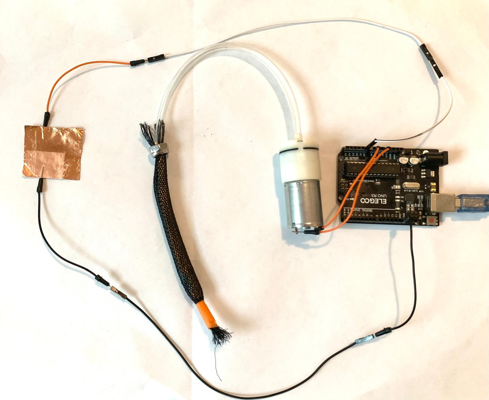
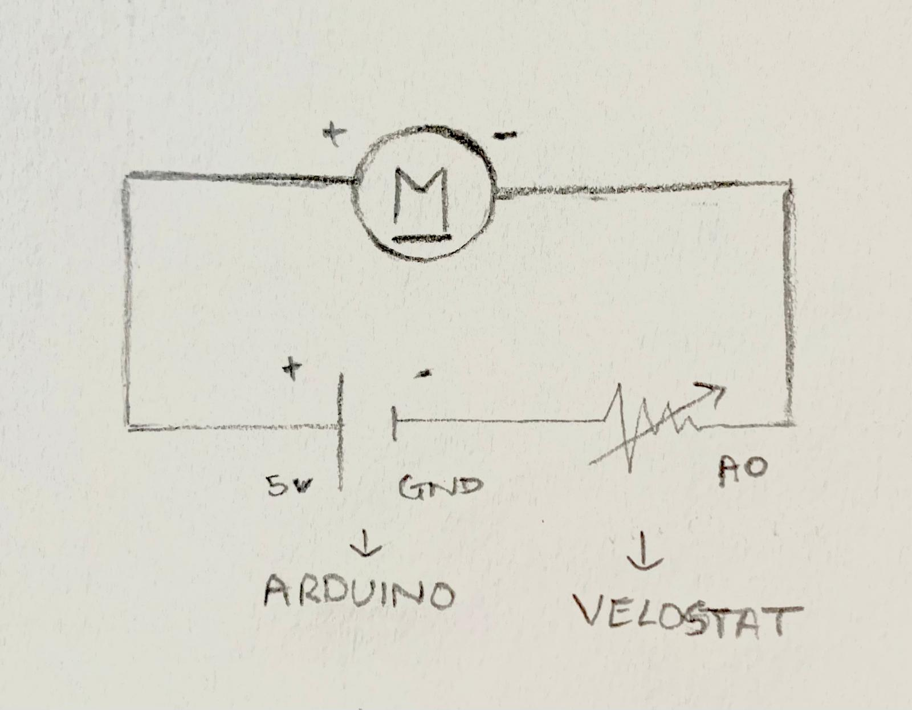

Embrace
Proof of Concept
Week 4's programming assignment became a preliminary test for Embrace — the self-sizing neck brace I'm developing as my final project. It is a closed-loop system: a handmade pressure sensor tells the Arduino how tight the brace is, and the Arduino controls a pump to inflate a McKibben actuator until the fit is correct.
The Harvard lab didn't stock two key components I needed — a Force Sensitive Resistor (FSR) and a McKibben pneumatic actuator. Rather than redesign around their absence, I made both from scratch.
The FSR was built by sandwiching Velostat, a pressure-sensitive conductive plastic, between two layers of copper tape, creating a sensor that changes resistance under pressure. The McKibben actuator was constructed from a latex tube inside a braided mesh sleeve, which expands radially and contracts axially when inflated — the same principle used in soft robotics research at the Harvard John A. Paulson School of Engineering and Applied Sciences website.
Building both from materials in the lab taught me more about how these components actually work than buying them ever would have. This is version 1 — inflate to target pressure, hold and alert when too tight and manually deflate. Automatic deflation via solenoid valve is the next development milestone.
Demo
Closed-loop pressure sensing — pump inflates McKibben actuator to target fit


Left: full circuit · Right: Serial Monitor showing live pressure classification
How It Works
Input — Handmade FSR
A pressure sensor made from Velostat — a conductive plastic whose resistance drops under pressure — sandwiched between two layers of copper tape. No commercial sensor needed. The harder you press, the more current flows, and Arduino reads the change on analog pin A0.
Output — McKibben Actuator
A McKibben pneumatic artificial muscle — a latex tube and a balloon inside a braided mesh sleeve — that expands radially and contracts axially when inflated. Used here to simulate the self-sizing bladder system planned for the final Embrace brace.
Controller — Arduino Uno R3
Reads FSR pressure via A0, maps it to a 0–1000 scale,
and makes decisions: inflate if too loose, hold if
correct fit, alert if too tight. Uses
millis() for a non-blocking Serial output
so feedback is fast and responsive.
Deflation
Version 1 uses manual pinch release to deflate. Version 2 will integrate a solenoid valve controlled by Arduino Pin 11 — when pressure exceeds the safe threshold, the valve opens automatically and vents air.
Wiring

Circuit layout — FSR voltage divider + pump control
| From | To | Purpose |
|---|---|---|
| Arduino 5V | FSR copper layer 1 | Power to sensor |
| FSR copper layer 2 | Arduino A0 | Reads pressure |
| Arduino Pin 9 | Pump wire 1 | Pump control signal |
| Arduino GND | Pump wire 2 | Shared ground |
Code
Written in C++ for Arduino. Uses the class-free structure
with millis() for non-blocking timing —
no delay() calls anywhere, keeping the
sensor responsive at all times.
Process
Building the handmade FSR — Velostat sandwiched between copper tape layers
Handmade McKibben pneumatic actuator — latex tube inside braided mesh sleeve
Testing closed-loop inflation — pressing FSR triggers pump via Arduino